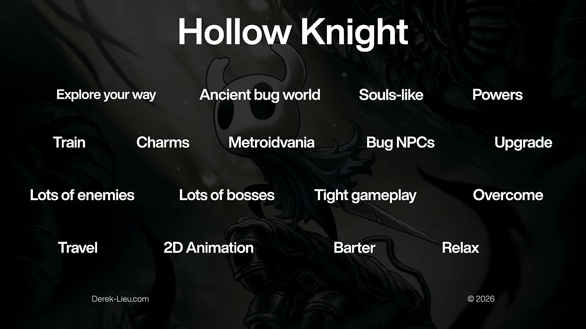
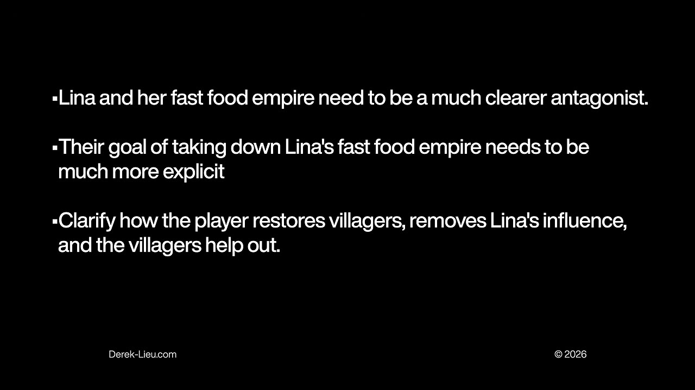
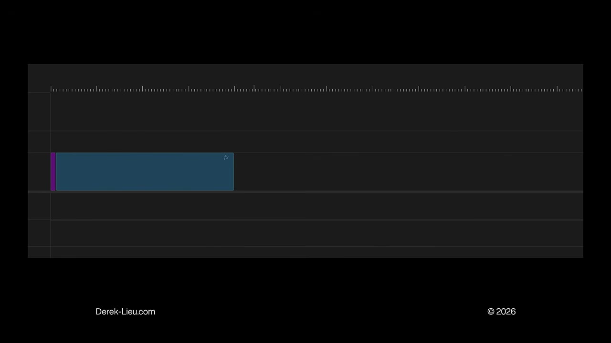

Start here
The overview
What belongs in a game trailer, and in what order? Derek Lieu’s answer is to start with the logic of a good verbal pitch. The viewer needs enough context to understand the game, a reason to find it distinctive, and a progression of ideas that makes later footage meaningful. Choosing striking shots first and adding trailer-like polish afterward can conceal the absence of that structure.
The lesson moves through three common mistakes, a pitch template credited to Jonas Tyroller, the relationship between familiar genre anchors and distinctive hooks, and examples from Papers, Please, Unpacking, and Super Mario Odyssey. Its final case study shows how clarifying the goals and relationships in Dosa Divas guided revisions to an announcement trailer. The template is a starting skeleton for an edit, with room for exceptions when audience familiarity or an unusually novel premise supplies context.
What the snapshots add
- Twenty-two targeted snapshots were inspected, including follow-ups for obscured or incomplete examples. They verify the feature-list slide, selected game footage, the explicit Dosa Divas revision requests, and the short genre block in the timeline diagram. The complete formula and several described moving sequences were not visible in the selected stills; their explanations below come from the captions.
What to take away
- Make variety meaningful before showing its extent
Biomes, costumes, and late-game spectacle are easier to value after the audience understands what the player does and why it is interesting.
- Give one to three pillars most of the attention
Equal time for every feature makes the distinctive ones harder to remember and can misrepresent the experience’s actual emphasis.
- Use genre recognition as a quick starting point
Familiar perspective and player-controlled action can establish anchors rapidly. Move on to the hook rather than spending the opening proving every genre convention.
- Connect actions to complications and goals
A clear objective makes mechanics feel purposeful, especially when the game lacks an immediately compelling, self-explanatory hook.
Start with the order in which a stranger needs information
Lieu frames the recurring trailer-making problem as two linked decisions: what to show and what order to show it in. After making hundreds of trailers, he sees creators overcomplicate those decisions by thinking first about what a trailer is supposed to look like.
His proposed foundation is a verbal pitch. If the game cannot be explained coherently in words, a collection of attractive images is unlikely to fix the missing logic. The finished video can do far more than spoken explanation through sound, performance, and editing, but it still benefits from presenting understandable ideas in a useful sequence.
Mistake one: showing variety before establishing value
An opening montage of environments tells the audience that the game has many biomes, but not why visiting them will be interesting. Lieu makes the same criticism of early montages of costumes and other nonessential customization. Viewers have not yet been given a reason to care about extending the experience.
His analogy is an ice-cream shop a thirty-minute drive away. Listing familiar flavors and toppings does not explain why somebody should make the trip; those are things they already expect an ice-cream shop to have. A new game likewise cannot be sold only by enumerating its similarities to existing choices.
He is not banning these montages. He suggests reserving them until at least around the middle of the trailer, after the audience has a taste of the underlying activity. Variety then expands something already appealing. Without that base, the amount of content has little persuasive force.
Mistake two: showing only the complicated later game
Creators often choose mid- or late-game shots to skip apparently dull material and show the most exciting state. The risk is that viewers receive spectacle before they understand its components. A dense image may be impressive to the developer while remaining undecipherable to a newcomer.
Lieu contrasts a huge Factorio factory with a simpler introduction involving only a small group of machines and a conveyor. The inspected later-game frame is full of belts, inserters, and repeated machinery. His argument is about sequencing: establish the basic relationship first, then the audience can appreciate what the larger system adds.
He acknowledges using advanced cold opens himself in Skin Deep, Spelunky 2, and Noita. The important qualification is what follows. He returns to the fundamentals: boarding a ship and rescuing cat crew members, beginning a platforming run, or descending into a cave whose materials physically interact. An arresting opening can work if the trailer then supplies the foundation needed to interpret it.
Mistake three: treating every feature as equally important
After years of development, a team understandably wants to show everything. But giving equal emphasis to every system reduces the significance of each one. Lieu criticizes the abundance of feature callouts in a Hollow Knight trailer, while acknowledging the game’s quality helped it succeed. His point is that another project should not assume it can ignore clarity because a famous game did.
The inspected slide makes the overload visible by spreading labels such as charms, upgrades, enemies, bosses, travel, barter, and relaxation across the image. None is necessarily a bad feature. The problem is that an unweighted inventory does little to tell the viewer which elements define the experience.
His Breath of the Wild example is hypothetical: giving climbing, fishing, cooking, combat, puzzles, and house decoration the same weight would obscure how central exploration and climbing are. In his account, the actual trailers gave those activities both screen time and cinematographic emphasis. A new indie game without an established reputation has particular reason to make that emphasis legible.
Lieu recommends one to three pillars. Describing a friend through a few memorable traits is his analogy: the introduction should give somebody a useful identity, not an exhaustive biography. Firewatch can be introduced through a fire lookout, radio conversations, and a mystery; Stray Gods through modern Greek gods, murder mystery, and an interactive musical; Venba through immigrants, cooking, and family. The chosen emphasis should also fit the game. His deliberately extreme example is a game with very little story whose trailer spends half its time on story.


A trailer does not need to imitate trailer conventions
Logos, title cards, voiceover, and slow environmental openings are not inherently useful because other trailers contain them. Lieu argues against inserting them merely to make the edit feel legitimate. Each device needs to contribute to the introduction being made.
He reserves leisurely openings for situations where the audience is effectively captive or has already committed to watching. An unknown game encountered in an ordinary feed cannot safely assume the attention available to a major showcase reveal.
Tiny Glade supplies his alternative: a short sequence of five shots, relaxed music, clear progression, and eye trace that keeps the action easy to follow. He praises it for showing what that particular game is and is not. The inspected still shows the stone-building scene and cursor, while the account of the full edit follows his explanation. A trailer can be modest in form and still do its job extremely well.
Test the pitch before decorating the edit
Lieu first gives a deliberately bad Spelunky 2 pitch: jetpacks, cats, bosses, randomized levels, digging, enemies, gems, money, and purchases. Someone unfamiliar with the game still cannot tell whether it is first person, third person, two-dimensional, or something else. The details lack an organizing idea.
His improved pitch starts with a side-scrolling platformer about exploring a mine for treasure. It then explains randomized layouts, enemies and traps whose behavior must be learned, and limited starting resources—four bombs, four ropes, and four hearts—before mentioning more biomes and secrets. The difference is that each new detail now has a place in the picture the listener is building.
The food-shop analogy returns: establish what kind of food is being served, then explain what makes this particular place worth trying. A text pitch is a useful test because impressive visuals cannot distract from an illogical sequence. Once the explanation works, well-chosen footage and sound enhance it; simply placing game images on a timeline does not guarantee understanding.
The basic template: genre, fantasy, actions, and distinction
Lieu credits Jonas Tyroller’s video about what sells on Steam for the starting formula: “[NAME] is a [GENRE] game about [FANTASY]. You [VERBS + USP].” USP means the unique selling point. The brackets are prompts for clarifying the game, not a requirement to place this exact sentence in a trailer.
Genre supplies the broad category. Fantasy means the role or experience the player inhabits: a globetrotting adventurer in Uncharted, climbing a mountain with friends in PEAK, or operating an enormous defense cannon in PVKK. Verbs describe what the player actually does. The distinctive element explains why those actions promise something beyond a familiar substitute.
Thronefall is his compact example: a minimalist strategy game about building and defending a kingdom, with construction during the day and fighting alongside units at night. That introduction supplies a category, an objective fantasy, and a concrete rhythm of activity without listing every available building or upgrade.
Papers, Please teaches a novel loop before adding complications
Some games have a premise unusual enough that showing how it works is already the main hook. Lieu groups Papers, Please, Unpacking, and Tiny Glade in this category. Their trailers need not begin by explaining every story detail or long-term objective, because the immediate interaction can create interest on its own. His first-to-market framing is a marketing interpretation of these examples, not an independently verified claim of absolute invention.
He describes the Papers, Please trailer as spending roughly forty seconds on its fundamental loop: call somebody into the booth, receive papers, inspect them, stamp a decision, and send the person away. The selected still shows a visa and the stamping interface. Only after that foundation does the trailer add roughly fifty seconds of changing rules, additional paperwork, contraband searches, and threatening incidents.
The last roughly fifteen seconds emphasize the variety of people encountered. Those times describe the embedded trailer, not the running time of Lieu’s lesson. The progression is the point: establish an understandable job, complicate the job, then show its breadth. It does not explain the whole game, but it gives a stranger enough to become interested.
Unpacking builds from placement into a larger experience
Lieu reverse-engineers Unpacking’s trailer as another verbal pitch. Begin with a pixel-art room and boxes; open a box, reveal an object, and place it. The uncertainty of what comes out next is part of the appeal. The inspected follow-up makes the interaction concrete: an isometric bedroom, packed and open boxes, and an object held by the cursor near the desk.
The explanation then expands through different rooms and moving an object to its appropriate room, such as taking a pot from a living-room box to the kitchen. Decorating choices and small interactions become meaningful once the basic action is understood. The rooms belong to one person’s life, and objects recurring across moves give continuity.
He also identifies stickers, sharing images with backgrounds, lightly interactive objects, the satisfying disappearance of empty boxes, and multiple levels. These details arrive as extensions of a comprehensible activity. His audit is not an instruction to copy Unpacking’s exact feature order; it demonstrates how one idea can prepare the viewer for the next.
Establish genre anchors quickly, then move beyond them
For a game that develops an established genre rather than presenting a wholly unfamiliar premise, Lieu recommends signaling the genre as soon as possible. A familiar camera angle plus a moment of player-controlled gameplay can be enough for an experienced viewer to recognize the broad category.
He credits Chris Zukowski with the term anchors: the conventions and mechanics that reassure genre fans that the core experience is present. Farming in a life sim, coin collection in a platformer, a large map in a Metroidvania, and branching choices or upgrades in a roguelike are his examples. Recognition gives viewers a starting point from which to notice a difference.
His restaurant analogy separates reassurance from persuasion. Familiar dishes on a Chinese restaurant’s menu can make it recognizable, but reciting the entire list does not explain why somebody should try it instead of their usual place. Once the game’s broad identity is clear, the trailer should move toward its distinctive proposition rather than spend the opening confirming every expected convention.
Hooks describe different reasons someone might want the game
A hook creates interest by making a familiar experience meaningfully different, or by offering an appealing unfamiliar one. Lieu uses Dead Space’s dismemberment and Elden Ring’s open-world variation on the Souls experience as quick examples of a recognizable base changed by an important idea.
He cautions that many games have only small differences rather than a strong hook. A different upgrade system, customizable powers, or art treatment does not automatically transform the player’s anticipated experience. The point is not to invent a slogan declaring uniqueness, but to identify what the viewer could actually desire.
Drawing again on Tyroller, Lieu presents several kinds of appeal. The categories overlap and need not all appear in one trailer. They help the creator find the right reason to care instead of assuming every hook must be a novel combat mechanic.
- A novel offering: interest in something that feels new. His examples include Stray, Ghost of Tsushima, and Papers, Please, framed as distinctive arrivals in their markets.
- A world or premise: wanting to explore or inhabit the space. He cites Dredge’s cosmic-horror fishing, Journey’s atmosphere, and Half-Life 2’s oppressive setting.
- Characters: wanting to become someone or spend time with them. His examples include Dispatch, Venba, and Little Kitty, Big City.
- Story: curiosity about what happens and why. He points to Firewatch, Death Stranding, and Clair Obscur: Expedition 33 as different ways to create that curiosity.
- Challenge: wanting to prove oneself against a compelling problem, as in Souls games, Cairn, or Baby Steps.
- Interaction: wanting to try a mechanic or repeat a satisfying activity. He cites SUPERHOT’s time-and-movement relationship, restoration in Reshine, Viewfinder’s interactions, and factory building.
Super Mario Odyssey introduces a hook and then explores it
Lieu analyzes the Odyssey trailer’s opening T-Rex mystery as a privilege of context. It played during an E3 presentation to an audience already watching, and Nintendo’s reputation supplies expectations an unknown indie project cannot assume. When the dinosaur’s cap and Mario appear, the first message is that this is a Mario game.
The next question is which kind. Movement and camera perspective establish a core 3D Mario game. Some shots resemble the environment montage criticized earlier, but the brand has already filled the viewer’s mind with a large amount of relevant prior knowledge. The selected text slide explicitly identifies the new core 3D Mario message; the account of the sequence follows Lieu’s narration.
Cappy then provides the distinction. Initial examples extend recognizable attacks, jumping, and traversal, but the stronger change is possessing other creatures and using their abilities. Lieu says the frog sequence takes time to make that concept clear before a rapid series of further examples. Once the rule is understood, a Goomba, Bullet Bill, robot, fish, or other target becomes another variation on the same hook rather than a new unrelated feature.
Bosses, costumes, and other footage arrive later. The trailer returns to more possession possibilities and eventually the T-Rex from the opening. It contains a great deal of variety while retaining a focused verbal proposition: a new 3D Mario game whose cap lets Mario use the abilities of other beings. Familiarity explains the exception; it is not a reason for a new studio to copy the opening without context.
A goal gives mechanics something to accomplish
When the hook is less immediately compelling, Lieu finds a clear goal especially useful. Showing what the player can do is not the same as explaining what the player is trying to achieve. The objective need not be profound; saving a princess or increasing a number can both supply direction.
His hammer analogy makes the distinction concrete. The same tool means something different when the task is building a cozy home, performing in a rhythm game, or defending oneself in a fight. Explaining the problem changes how the available actions are perceived. Without that connection, a set of mechanics can feel like a solution waiting for a reason to exist.
Dosa Divas: diagnose the missing relationship between story and play
Lieu presents an early Dosa Divas announcement draft on which he consulted. The inspected draft frames include a food mech over a colorful landscape and a large screen displaying a purple-haired character. Those images establish ingredients of the presentation, but the stills alone do not explain the goal or relationships. His critique concerns the draft as a whole.
He identifies three missing connections: what the protagonists want, how they relate to the antagonist, and how the mechanics advance their purpose. To resolve those questions he asked creative director Chandana Ekanayake to explain the loop and its relationship to the story. The answer provided the organizing material the edit needed.
Amani and Samara are sisters who have fallen out with their sister Lina. Lina built a fast-food empire whose processed meals have displaced nourishing regional South Asian cooking. Amani and Samara travel in a food mech, cook for weakened villagers, reconnect communities with their food and culture, and restore their strength. The villagers can then help the sisters progress toward defeating Lina’s empire and possibly reconciling with her.
The inspected revision slide states the proposed changes explicitly: make Lina and the empire a clearer antagonist, make taking down the empire a more explicit objective, and clarify the chain from restoring villagers to removing Lina’s influence and receiving help. The issue is not simply needing more story footage. The trailer needs the relationship between cooking, community, conflict, and progress to become understandable.


Dosa Divas: use the clarified premise to guide the revision
Lieu then plays the final announcement trailer, beginning with LinaMeals branding and a jingle in the captions. The selected final-version stills bring the protagonists and mech into the same composition as the large corporate screen, show a character presenting a glowing dish, and show an action encounter. These verify particular visible elements, not every edit or line in the completed trailer.
He regards the revised version as a substantial improvement and acknowledges his own involvement as consultant. The useful lesson is the process: clarify what the game is trying to say, then let that understanding guide emphasis and sequence. These snapshots and his qualitative judgment do not establish a measured change in sales or audience comprehension.
The embedded drafts contain long stretches without transcribed dialogue. This reading therefore preserves the diagnosis and proposed solution supported by his explanation and slide, without reconstructing an unseen or untranscribed complete script.
Expand the pitch with complications, responses, and a goal
The basic pitch introduces the game, but a trailer usually needs development beyond its first loop. Lieu adds another sentence: “[COMPLICATIONS] force you to [VERBS] in order to [GOAL].” The additions explain what changes, how the player responds, and why the response matters.
His Dosa Divas version starts with a turn-based RPG about two sisters piloting a food mech. Cooking, fighting corporate forces, building relationships with communities, and reconciling with loved ones establish the activity. New enemies and strained relationships create pressure to learn recipes and acquire tools, directed toward taking down the sister’s fast-food empire.
This is a first-draft framework, not a promise that a finished trailer should mechanically illustrate each bracket in order. Footage can change the edit. The priority is preserving a comprehensible progression; match cuts, motion graphics, sound effects, and cuts to black can polish that foundation afterward.
Keep genre recognition brief and spend time developing the hook
The closing timeline demonstration emphasizes how little time establishing genre may require. At the inspected moment, a very narrow purple segment precedes a much longer blue block. Lieu’s narration identifies the short opening as player-controlled gameplay that establishes the category, followed by the hook and what the player does. The graphic does not supply a universal number of seconds or a numerical percentage.
The next part explores variations, complications, and possibilities within the hook. Once viewers understand the premise, the ending can be looser because they can interpret new shots in relation to it. This is where a little content variety, costumes, or other nonessential extras may fit, followed by the game title and a call to action.
His final caution is to avoid filling the opening with anchors. If the game does not look as though it contains expected genre staples, add reassurance where useful; otherwise focus attention on what distinguishes it. The template works by giving the audience the necessary foothold quickly and then spending its attention on reasons to want this particular game.


Source & limitations
This is an editorial synthesis of The Best Game Trailer Template | Video Game Trailer Academy, published by Derek Lieu. Timestamp links open YouTube at the corresponding section.
- Based on the complete manual English-caption transcript of the 31:08 lesson. Some caption wording and game-name transcription are imperfect; unclear nonessential wording is not reconstructed.
- Twenty-two targeted snapshots were inspected, including seven follow-ups to resolve dark frames, presenter-only moments, and an incomplete timeline graphic. Images verify the specific visible details described, not continuous animation, eye trace across every cut, or the entirety of the embedded trailers.
- The complete pitch formula is supported by the captions; the selected formula snapshots show either a partial line or the presenter. The Dosa Divas embeds contain substantial gaps in transcribed dialogue, so a complete before-and-after script is not claimed.
- Recommended structures, interpretations of example trailers, and first-to-market claims are Lieu’s analysis. No independent performance experiment or current market verification was conducted.
Inspected snapshots (22)
Selected stills, not continuous video review. Observations below describe the inspected frames.
2:25 ↗
- The Factorio example fills the image with a dense factory of belts, inserters, and machines. This is the visually complex end of the speaker’s basic-to-advanced comparison.
4:30 ↗
- A Hollow Knight slide spreads many feature labels across the screen, including exploration, powers, charms, upgrades, enemies, bosses, travel, animation, barter, and relaxation. It illustrates the feature-list critique rather than measuring the game’s success.
7:50 ↗
- The Tiny Glade example shows a sunlit stone ruin amid grass and trees, with a red cursor mark near its base. One still cannot verify the complete five-shot edit or its eye trace.
10:30 ↗
- The pitch-template animation currently displays only the name-and-genre portion, with attribution to Jonas Tyroller’s video. The complete formula is not yet on this inspected slide.
12:20 ↗
- The Papers, Please example shows an entry visa beneath the stamping interface, with an approved stamp area visible above. It supports the document-checking premise; one still does not establish the whole loop.
13:35 ↗
- The initial Unpacking snapshot is very dark, showing a room and boxes during a transition. Fine details are difficult to read, requiring the nearby follow-up.
13:45 ↗
- The Unpacking follow-up shows an isometric bedroom with packed and open boxes, a desk, bed, shelves, and a cursor carrying a small object near the desk. It makes the placement interaction visible.
15:40 ↗
- The frame shows Derek Lieu speaking to camera. No anchor list or game example is displayed at this instant.
18:10 ↗
- The frame shows Derek Lieu speaking to camera. It does not independently display or verify the first-to-market claims in the narration.
22:05 ↗
- A black slide identifies the message of the Mario example as a new core 3D Mario game. The gameplay sequence itself is not visible in this still.
22:20 ↗
- The frame shows Derek Lieu explaining the Mario example. It does not show the frog possession described in the narration.
24:50 ↗
- The first Dosa Divas draft shows a large food mech in the air above a colorful landscape and a character below. The still does not explain the characters’ relationships or goal.
25:45 ↗
- A later first-draft frame shows a large floating screen displaying a purple-haired character, against the village setting. One frame cannot establish the full dialogue or antagonist setup.
27:15 ↗
- The critique slide explicitly requests a clearer Lina/fast-food antagonist, a more explicit goal of taking down the empire, and a clearer link between restoring villagers, removing Lina’s influence, and villagers helping the player.
27:35 ↗
- The final-trailer sample puts the food mech and protagonists in front of a large screen showing the purple-haired character and corporate imagery. This still establishes the composition, not every line or edit in the final trailer.
28:00 ↗
- The final-trailer sample shows a character holding a glowing dish aloft. It visually emphasizes food, but does not by itself establish the complete restoration mechanic.
28:20 ↗
- The final-trailer sample shows a character in an action encounter with a wheeled enemy and bright impact effects. The full battle system cannot be inferred from this still.
29:00 ↗
- The frame shows the presenter speaking during the expanded-pitch explanation; the complete written formula is not visible.
29:10 ↗
- The follow-up also shows the presenter speaking. The formula is supported by the captions, not an inspected complete formula slide.
30:00 ↗
- The structure graphic is a mostly empty editing timeline before the later colored blocks appear. It supplies no readable numeric allocation.
30:10 ↗
- The later timeline contains a very narrow purple segment followed by a much longer blue block. In conjunction with the narration, it illustrates a brief genre-establishing opening followed by the hook and actions; it supplies no fixed timing percentages.
30:20 ↗
- The frame has returned to the presenter speaking. The complete final timeline is not visible at this instant.
Read the timestamped source captions
en · manual captions. Caption errors and non-speech labels are retained in this source view.
0:00 ↗ I've made hundreds of game trailers over the past ten years.
0:03 ↗ And the number one question I get aside from:
0:06 ↗ “Do you actually get to PLAY the games!?”
0:08 ↗ YES OF COURSE I PLAY THE GAME!
0:09 ↗ The number one question is:
0:11 ↗ What do I put in my trailer and in what order?
0:16 ↗ All you need to do is make your trailer feel like a good verbal pitch.
0:22 ↗ But there's so much more to it than that.
0:24 ↗ Hi, I'm Derek Lieu, and this is Video Game Trailer Academy.
0:27 ↗ A series of videos to help you make better game trailers.
0:30 ↗ One of the biggest challenges of making a great game trailer...
0:33 ↗ is choosing what to show and in what order.
0:37 ↗ I think most people overthink this problem and end up making their trailers
0:40 ↗ way worse.
0:42 ↗ These are the most common mistakes I see.
0:45 ↗ Starting with what I call: The indie game trailer environment montage.
0:50 ↗ I've done this type of shot too,
0:51 ↗ BUT I never put it at the beginning,
0:54 ↗ because all it says is, look how many biomes there are in this game.
0:56 ↗ LOOK HOW MANY BIOMES THERE ARE IN THIS GAME!
0:58 ↗ How can we care about biomes before seeing what you do in the game and what makes it unique?
1:05 ↗ Related, lot of trailers are front loaded with montages of...
1:09 ↗ cosmetics and things which aren't related to gameplay.
1:13 ↗ This is like trying to sell me on an ice cream shop a 30 minute drive away by saying...
1:18 ↗ OH MY GOD, LOOK! WE HAVE SO MANY FLAVORS!
1:22 ↗ strawberry, chocolate, vanilla, coffee.
1:24 ↗ ALSO, CHECK OUT THESE TOPPINGS!
1:26 ↗ Sprinkles. Peanut butter cups. M&Ms.
1:29 ↗ every ice cream shop has flavors and toppings.
1:31 ↗ So if that's your pitch, that's not worth the 30 minute drive.
1:35 ↗ You can't sell something new.
1:37 ↗ By describing all the ways, it's the same as what came before.
1:41 ↗ It's okay to have this montage in the trailer.
1:45 ↗ Just wait until at least halfway through the trailer to show it.
1:49 ↗ Once we have a taste, only then will we care at all about the thing...
1:54 ↗ which extends out the gameplay, like collecting hats.
1:58 ↗ Variety is a value multiplier and you can't multiply nothing.
2:04 ↗ The second mistake are trailers which show only shots from mid to late game.
2:09 ↗ I think this is to skip the boring stuff and get to the most exciting shots.
2:14 ↗ The problem is, these shots are often too much to process...
2:18 ↗ because we weren’t given a basic understanding of the game...
2:21 ↗ before seeing all the bells and whistles.
2:23 ↗ It would be like if this great trailer for Factorio,,,
2:27 ↗ started here: where the factory is already huge with tons of moving parts,
2:32 ↗ Rather than here: where we're looking at a single unit operating a tiny part of a factory
2:36 ↗ with just a few machines and one conveyor belt.
2:40 ↗ admittedly, I've made trailers which start with scenes from mid to late game,
2:44 ↗ like in my trailers for Skin Deep,
2:49 ↗ NINA: Nothing left.
2:50 ↗ GUARD: She's getting away!
2:53 ↗ Spelunky 2,
3:00 ↗ and Noita.
3:09 ↗ But in those trailers, after the cold open,
3:12 ↗ I go back to the beginning to explain the basics of the game.
3:16 ↗ In Skin Deep, you emerge on to a ship, find the members of the cat crew,
3:19 ↗ look for keys to get them out, and deal with guards along the way.
3:25 ↗ In Spelunky 2, you start in the first level, jump around and fight enemies.
3:29 ↗ In Noita,
3:30 ↗ you're trying to go as deep into the cave as possible,
3:33 ↗ and everything in the game burns, crumbles, flows, and shatters.
3:37 ↗ Like in real life.
3:40 ↗ A section which shows the fundamentals...
3:42 ↗ is the key to understanding anything from mid to late game.
3:46 ↗ More on this later.
3:47 ↗ The third mistake I see most often are:
3:50 ↗ trailers which show too many aspects of the game.
3:53 ↗ I know why they do this.
3:54 ↗ Again, it's to show variety.
3:56 ↗ And because after spending years making a game,
3:59 ↗ developers are eager to show everything.
4:03 ↗ This trailer for Hollow Knight
4:04 ↗ is actually a great example because look at all these title cards.
4:08 ↗ This is just a laundry list of every feature,
4:11 ↗ which is a really boring way to talk about the game.
4:14 ↗ But of course, the game was so transcendentally well made...
4:18 ↗ that this didn't matter.
4:19 ↗ BUT MOST GAMES ARE NOT HOLLOW KNIGHT!
4:22 ↗ the problem here, is by calling out so many aspects of the game,
4:25 ↗ you're reducing their significance.
4:28 ↗ Giving equal weight to every feature means no one or two stand out.
4:33 ↗ For example,
4:34 ↗ if a trailer for The Legend of Zelda Breath of the Wild gave equal time to:
4:39 ↗ Climbing, fishing, combat, cooking,
4:41 ↗ talking to NPCs, solving puzzles, and decorating your house.
4:45 ↗ This would be a terrible trailer for Breath of the Wild,
4:49 ↗ because it wouldn't showcase how game changing the exploration is.
4:55 ↗ The actual trailers for Breath of the Wild spent a lot of time showing the climbing
4:59 ↗ and exploration not just in quantity, but the cinematography also highlights it.
5:04 ↗ But if the trailers didn't make it clear, exploring and climbing is THE THING...
5:09 ↗ in this game,
5:10 ↗ people might get the impression there's just a few climbable surfaces.
5:15 ↗ Of course, in the end, Nintendo in this hypothetical scenario,
5:19 ↗ botching that trailer would have been fine.
5:20 ↗ But if you're an indie game dev with little to no reputation
5:24 ↗ or marketing muscle, first impressions matter.
5:27 ↗ So a trailer which doesn't accurately show your game can make a HUGE DIFFERENCE!
5:33 ↗ I think the best trailers pick 1 to 3 pillars and make those the key messages.
5:40 ↗ Think of it this way:
5:41 ↗ how would you describe a friend or family member to someone who's never met them before?
5:45 ↗ For example, my friend Julio is Puerto Rican,
5:49 ↗ really good at Chinese kung fu and knows all there is to know about beer.
5:53 ↗ That's Julio.
5:54 ↗ We love Julio.
5:55 ↗ Think about your game in these terms.
5:57 ↗ For example, in Firewatch, you're a fire lookout
6:00 ↗ who uses their walkie talkie to communicate with their boss.
6:03 ↗ And there's a mystery.
6:04 ↗ Stray Gods is about Greek gods in a modern environment.
6:07 ↗ There's a murder mystery, and it's an interactive musical.
6:11 ↗ Venba is about Indian immigrants, cooking, and family.
6:15 ↗ Breath of the Wild’s key features are: climbing and exploring, Link's new magic abilities,
6:20 ↗ and the physics sandbox design, which allows for play and experimentation.
6:24 ↗ Give more significance to the key pillars of the game...
6:28 ↗ by dedicating the most time to them in the trailer.
6:32 ↗ If your game is 3% story and 97% gameplay,
6:36 ↗ don't make the trailer 50% story and 50% gameplay.
6:41 ↗ So how should you structure your game's trailer?
6:44 ↗ First, stop making a trailer based off what you think a typical trailer “looks” like.
6:51 ↗ NARRATOR: HERE WE GOOOOOOO!!!
6:58 ↗ This means no protracted sequences of logos at the start.
7:03 ↗ No title cards Just for the sake of it.
7:05 ↗ No voiceover just for the sake of it.
7:08 ↗ No empty environment shots to slowly ease people into the trailer.
7:12 ↗ Easing the audience into the trailer is a luxury you can afford.
7:16 ↗ IF AND ONLY IF you know the trailer will play in front of a captive audience
7:22 ↗ who either can't look away
7:23 ↗ or has already decided to watch trailers for the next 1 to 3 hours of their life.
7:27 ↗ A trailer doesn't need to “look” like a trailer
7:35 ↗ or “feel” like a trailer to be a legit trailer.
7:39 ↗ It just has to be a short video, which quickly sums up what the game is.
7:44 ↗ For example, this trailer for Tiny Glade is a GREAT trailer for Tiny Glade.
7:50 ↗ It's just five shots, but it perfectly shows what Tiny Glade is and isn't.
7:55 ↗ Also, it has perfect eye trace.
7:58 ↗ Just watch as the cursor here goes...
8:01 ↗ Oh, yeah, that's the stuff.
8:03 ↗ the music is chill.
8:05 ↗ Each shot builds upon the last one.
8:07 ↗ Introducing more game mechanics which keep things interesting.
8:12 ↗ So, what order should you show the parts of your game in a trailer?
8:16 ↗ Like I said at the start, structure of the trailer like a good verbal pitch.
8:21 ↗ This ensures you show things in an order which makes sense
8:25 ↗ and layers new ideas through the trailer.
8:29 ↗ For example, I'm going to give you a TERRIBLE pitch for Spelunky 2.
8:33 ↗ Spelunky 2 is a game where you have a jetpack, save cats,
8:36 ↗ There are boss battles, randomized levels.
8:38 ↗ You dig holes, fight enemies, collect gems and money, and buy items and upgrades.
8:43 ↗ Anyone who's never played or heard of Spelunky is very confused right now.
8:47 ↗ What genre is it?
8:48 ↗ Is it 2D, 3D, third person?
8:51 ↗ First person?
8:52 ↗ There are so many basic questions
8:54 ↗ the audience needs answers to even begin forming a picture.
8:58 ↗ I'm going to give a better pitch.
9:00 ↗ Still not the best pitch, but a much better start.
9:02 ↗ Spelunky 2 is a side scrolling platformer where you explore a mine
9:06 ↗ search for treasure.
9:07 ↗ The level layouts randomize so it's different every time you play.
9:11 ↗ There are lots of enemies and traps...
9:13 ↗ whose behaviors and quirks you need to learn and master,
9:16 ↗ and every single run you start with only...
9:19 ↗ four bombs, four ropes, and four hearts.
9:21 ↗ There are lots of biomes and secrets to uncover.
9:25 ↗ Much clearer, right?
9:26 ↗ Now, of course, a bunch of you are thinking:
9:28 ↗ “But Derek, trailers can be so much more than a verbal pitch...
9:31 ↗ because they use visuals, audio, and editing.”
9:34 ↗ yes, but for most games you still need to present information
9:37 ↗ in a logical order for us to understand what the heck we're even seeing.
9:41 ↗ I can't pitch you on a new food place, that I'm opening a 30 min drive away...
9:46 ↗ by first talking about flavors and toppings.
9:48 ↗ I have to start with what food the place is serving.
9:51 ↗ even after explaining it's an ice cream shop.
9:53 ↗ The next words out of my mouth can't just be flavors and toppings.
9:57 ↗ The next part has to be what makes my ice cream shop unique.
10:01 ↗ If your pitch works through text alone,
10:03 ↗ well-made and edited visuals and sound ENHANCES the presentation.
10:08 ↗ Starting by just throwing in a bunch of shots can make it harder to realize...
10:11 ↗ you're making a trailer, which makes no sense.
10:14 ↗ Just because you're showing images from the game...
10:16 ↗ doesn't mean the message is sinking in.
10:18 ↗ Here's a great template for your game’s pitch
10:21 ↗ by game dev Jonas Tyroller from his video:
10:23 ↗ “What Sells on Steam?: You Don’t Need a Hook”
10:26 ↗ (which I highly recommend).
10:27 ↗ [NAME] is a [GENRE] game about [FANTASY].
10:32 ↗ You [VERBS + USP]
10:34 ↗ So the [NAME]is of course the name of your game.
10:36 ↗ [GENRE] is something like: side scrolling platformer,
10:39 ↗ and the [FANTASY] is the role you inhabit or the thing that you do in the game.
10:45 ↗ So for example: Uncharted’s fantasy is being a globetrotting adventurer.
10:50 ↗ PEAK’s fantasy is climbing a huge mountain with your friends.
10:53 ↗ PVKK’s is operating a massive planetary defense cannon.
10:59 ↗ and Unpacking’s is “Unpacking, but fun.”
11:04 ↗ [VERBS] are the thing you do in the game,
11:06 ↗ and the [USP] is the Unique Selling Point.
11:10 ↗ using this template.
11:11 ↗ Here's Jonas's pitch for his game Thronefall.
11:13 ↗ Thrownfall is a minimalist strategy game about building and defending your kingdom.
11:18 ↗ You construct buildings during the day and fight along units during the night.
11:21 ↗ Now that we know to structure trailers like a good verbal pitch—
11:24 ↗ at least to start,
11:26 ↗ what does this look like in practice?
11:28 ↗ How this goes depends on the type of game you're making.
11:31 ↗ Let's start with the easiest scenario.
11:34 ↗ The truly hooky game.
11:36 ↗ This is a game which has no comparison...
11:39 ↗ in marketing terms It's a “first to market game.”
11:41 ↗ It's singular.
11:42 ↗ in marketing terms. It's a first to market game. It's singular.
11:42 ↗ There's little point of reference beyond a camera perspective or control scheme.
11:47 ↗ Games like: Tiny Glade (which I showed),
11:50 ↗ Papers Please or Unpacking.
11:52 ↗ These games pretty much just have to show how they work.
11:55 ↗ Their trailers don't even have to get into details like:
11:58 ↗ the story and the plot, or the goals of the player.
12:01 ↗ They just need to show what the thing is.
12:05 ↗ And the trailers for these games are excellent because they do just that.
12:09 ↗ The trailer for Papers Place is very much structured, like a verbal pitch.
12:13 ↗ The first 40s show the basic game loop calling a person into your booth,
12:17 ↗ receiving their passport or stamping it and sending them on their way.
12:21 ↗ 40s on just the basics.
12:24 ↗ The next 50s show the twists and turns on mechanic.
12:28 ↗ New paperwork to check, new rules and mandates.
12:31 ↗ Searching for contraband and people throwing pipe bombs.
12:36 ↗ The last 15 seconds
12:38 ↗ is a content montage which shows a huge variety of faces.
12:41 ↗ If you reverse engineer the trailer for papers, please
12:44 ↗ and turn it into a verbal pitch, it sounds like this.
12:47 ↗ Papers, please, is a game
12:49 ↗ where you're an immigration inspector, where you call in immigrants one by one.
12:53 ↗ You inspect their papers and approve or deny their entry.
12:57 ↗ The country you work in is the fictitious country of artists.
13:01 ↗ Things grow more complicated as some people
13:04 ↗ try to jump the border and attack with explosives.
13:07 ↗ The number of documents you check will increase, requiring you
13:10 ↗ to keep a closer eye on discrepancies.
13:13 ↗ Some citizens require additional searches for contraband.
13:16 ↗ There's a wide variety of people whose documents
13:18 ↗ you'll have to search and approve or reject.
13:21 ↗ This does not encompass the entirety of papers, please,
13:24 ↗ but it was enough to pull the audience in because the concept was so novel
13:28 ↗ at the time.
13:28 ↗ The trailer for unpacking is similarly straightforward.
13:31 ↗ Here's how I'd reverse engineer a verbal pitch based on this trailer.
13:35 ↗ Unpacking is a pixel art puzzle game where you start in a room with boxes.
13:39 ↗ You open a box, remove objects, and place them in the room.
13:42 ↗ You don't know what's going to be in the box,
13:44 ↗ but they're revealed one at a time in rooms such as Bathroom, kitchen.
13:48 ↗ Some places will have multiple rooms to navigate.
13:51 ↗ Objects like a pot might be in a living room box
13:54 ↗ and need to be brought to your kitchen.
13:56 ↗ It's up to you how to decorate your rooms.
13:58 ↗ Some objects have light interactivity, like changing the poses on a wooden doll
14:02 ↗ and turning on a Gamecube like console.
14:05 ↗ Each of these rooms is part of one person's life.
14:08 ↗ Most objects
14:09 ↗ have no predetermined place to put them, but everything has to be put somewhere.
14:13 ↗ You can unlock special stickers with unique combinations
14:16 ↗ like putting a toaster in the bathtub.
14:18 ↗ Add these stickers
14:18 ↗ and custom backgrounds if you want to share images of your rooms.
14:21 ↗ Some objects, like a plush pig, carry across multiple levels.
14:25 ↗ When empty boxes disappear with a delightful swoosh sound.
14:29 ↗ There are many different levels to play.
14:31 ↗ Looking at this audit of the trailer
14:33 ↗ tells me this sequence of ideas was well executed.
14:36 ↗ Okay, this is great for the games with a unique premise,
14:39 ↗ but what about the majority of games which iterate on popular genres and formulas?
14:44 ↗ This is a more difficult situation, but you still need to present things
14:48 ↗ in a logical order.
14:50 ↗ when you don't have a captive audience.
14:52 ↗ Show the genre as soon as possible.
14:56 ↗ All most gamers need is to see the camera perspective
14:59 ↗ and a bit of player controlled gameplay to have a ballpark idea of the genre.
15:03 ↗ what kind of game is this?
15:05 ↗ This? This?
15:06 ↗ This or this?
15:08 ↗ If the audience plays a lot of games, a single shot of gameplay
15:12 ↗ where the player is visible is enough
15:14 ↗ to flood their head with preconceptions and staples of the genre.
15:18 ↗ Familiar camera angles and gameplay styles
15:21 ↗ makes us think of each genre's anchors.
15:25 ↗ If you're not familiar with the term, it was coined by Chris Zukowski of HowtoMarketaGame.com
15:29 ↗ Anchors are common gameplay mechanics, conventions, and tropes copied from past games.
15:35 ↗ Anchors reassure fans your game has the core thing which define the genre.
15:41 ↗ For example, farming in a life sim, collecting coins in platformers,
15:47 ↗ big maps in Metroidvanias, branching choices and upgrades in roguelikes.
15:52 ↗ Imagine a new Chinese restaurant opened near you.
15:55 ↗ You'd probably scan their menu to see what it's all about.
15:58 ↗ If it didn't have anchors like fried rice, lo mein chow fun, and egg rolls,
16:02 ↗ You'd likely question if it's a legit Chinese place at all,
16:05 ↗ but if it does have those things,
16:07 ↗ that's enough reassurance to then look for something unique...
16:10 ↗ to justify trying it over your usual favorite Chinese place.
16:13 ↗ Anchors give us a starting point, which allows us to see what is unique and hooky.
16:19 ↗ That's why it's essential to start with an in-game camera angle,
16:23 ↗ or player-controlled gameplay, which signals those anchors.
16:26 ↗ In a verbal pitch the first “shot” is the genre or genres.
16:31 ↗ after starting with a general defining shot,
16:34 ↗ the trailer needs to move onto what the unique or hooky thing is.
16:39 ↗ WINSTON: Oh, come on, Mr. Palmer left the car in reverse!
16:44 ↗ What you don't want to do after defining the genre...
16:47 ↗ is to spend time showing every little thing your game has in common with other games.
16:53 ↗ This would be like if your pitch for a new Chinese restaurant was...
16:55 ↗ every dish you already expect to find in any Chinese place.
17:00 ↗ Sure, we all need our staple go to Chinese takeout spot,
17:03 ↗ but once we have a good one,
17:05 ↗ we need a distinguishing factor to take a chance on a different place.
17:09 ↗ In contrast to anchors, hooks are what perk up our attention
17:13 ↗ by showing something unexpected and literally game changing.
17:17 ↗ It changes the game just enough to create a whole new experience.
17:21 ↗ Like ice cream, but made with liquid nitrogen
17:24 ↗ or in game terms, 3rd person action shooter plus “cut off their limbs” equals Dead Space.
17:31 ↗ Open world plus Dark Souls equals Elden Ring.
17:35 ↗ Tomb Raider plus a wrist grappling hook equals Tomb Raider Catalyst
17:39 ↗ Realtalk, A lot of games don't actually have a strong hook.
17:44 ↗ They just have something that's a little bit different,
17:47 ↗ like an upgrade system or customizable powers, or a different art style.
17:52 ↗ Good hooks come in many forms.
17:55 ↗ Here are some of the big ones.
17:56 ↗ First to market.
17:57 ↗ Here you want the reaction to be: “Ooo, that's new!”
18:00 ↗ This category is arguably the easiest thing for a trailer editor to work on,
18:04 ↗ because when you're first in the space, there's no one to compare you to.
18:07 ↗ As long as it's interesting or compelling, you're good to go.
18:10 ↗ Some good examples are.
18:12 ↗ Stray, the first big budget game where you play as a cat.
18:16 ↗ Stray became shorthand for any game with a cat in it,
18:19 ↗ because it was the first to market, and became a market leader in cat games.
18:23 ↗ CAT: Meow.
18:24 ↗ Ghost of Tsushima, first AAA open world game set in feudal Japan.
18:28 ↗ Papers, please.
18:29 ↗ First immigration inspector document checking game.
18:32 ↗ Next, a game can have a hooky world or premise where the reaction is:
18:38 ↗ “I want to explore that space” or “I want to exist in that space.”
18:42 ↗ Some good examples are Dredge, cosmic horror fishing game
18:45 ↗ Journey with its beautiful art and peaceful vibes,
18:49 ↗ and Half-Life 2 with its oppressive dystopian alien world.
18:53 ↗ A game can also have hooky characters which make people think:
18:56 ↗ “I want to be that character,” or “I want to interact with those characters.”
19:00 ↗ Some good examples, I think are Dispatch, Venba, and Little Kitty, Big City.
19:05 ↗ A story can be the hook where you want the reaction to be:
19:08 ↗ “I want to see how that story unfolds.”
19:11 ↗ For example, Firewatch, a sad middle aged man, retreats to being a fire lookout
19:15 ↗ because his wife has dementia.
19:16 ↗ Sounds so fun! (lol)
19:18 ↗ Death Stranding has a hooky story.
19:19 ↗ No clue what's happening, but I'm curious.
19:22 ↗ Clair Obscur Expedition 33 has an incredibly hooky story premise.
19:26 ↗ Everyone in the world is going to die when they turn 33?
19:30 ↗ Why yes, I do want to see why that is.
19:33 ↗ Challenge can be a hook where the game has something which looks or feels like an interesting problem,
19:38 ↗ and people react by saying,: “I want to prove myself with that.”
19:41 ↗ Some examples.
19:42 ↗ Elden Ring and the Souls games, Cairn, Baby Steps.
19:48 ↗ Types of hooky challenges can take so many forms
19:51 ↗ a game can also have a hooky, mechanic or interaction...
19:54 ↗ where when people see it and they think: “I want to play with that.”
19:57 ↗ “I want to tinker with that” or “I want to do that over and over.”
20:01 ↗ SUPERHOT is a great example.
20:02 ↗ First person shooter where time only moves when you move.
20:06 ↗ This upcoming game Reshine is a good example for people like me...
20:09 ↗ who spend too much time watching antique toy restoration videos on TikTok.
20:13 ↗ Viewfinder is a good example because just look at this.
20:17 ↗ Heck yeah, I want to do that over and over!
20:18 ↗ Satisfactory and factory games can fit in here or in the challenge category.
20:22 ↗ This can go so many ways.
20:24 ↗ this list of hooks and the “I want to explore that.”
20:27 ↗ “I want to do that.” quotes are also from Jonas Tyroller’s video.
20:31 ↗ It's a good video!
20:31 ↗ Now let's see what a trailer made like a good verbal pitch...
20:35 ↗ looks like with Super Mario Odyssey.
20:38 ↗ MARIO: Whoo-hoo!
20:39 ↗ First party Nintendo titles of course have a leg up,
20:42 ↗ because of their strong brand of quality games.
20:45 ↗ But each new game still has to show what they've retained from previous games...
20:49 ↗ and what's new.
20:51 ↗ This trailer starts with a cryptic cold open with a T-Rex.
20:54 ↗ You'll notice there's no indicator of what genre the game is,
20:57 ↗ or even what Nintendo game this belongs to.
21:01 ↗ They could do this because this trailer played...
21:03 ↗ during an E3 presentation with a captive audience.
21:05 ↗ Though reputable brands like Nintendo can...
21:08 ↗ pretty much always make trailers as if they have a captive audience.
21:12 ↗ Then we see the T-Rex is wearing a Mario cap with eyes on it.
21:15 ↗ Then Mario jumps out.
21:17 ↗ MARIO: Yeah hoo hoo!
21:18 ↗ First message is: this is a Mario game.
21:21 ↗ Next question:
21:22 ↗ But what kind of Mario game?
21:24 ↗ Is it a side scrolling one or 3D one like Mario 64 or Mario Galaxy?
21:28 ↗ The next shots show Mario driving in a city,
21:32 ↗ Mario running across hills,
21:34 ↗ and then in a familiar camera angle from behind as he runs through a desert.
21:38 ↗ You might be wondering:
21:39 ↗ “Derek, but isn't this the environment montage you railed against?”
21:44 ↗ Yes, but it's Nintendo.
21:46 ↗ And as soon as we knew it was a Mario game...
21:47 ↗ our heads filled with everything we knew from years of playing Mario games.
21:52 ↗ This is prior knowledge people have for popular Nintendo games,
21:56 ↗ but won't have for a new indie game from a studio they've never heard of.
22:01 ↗ So now the message is: a new core 3D Mario game.
22:05 ↗ The next section is all about Cappy— the new thing or hook in Mario Odyssey.
22:10 ↗ You can use Cappy to do things
22:11 ↗ similar to previous games, but in a slightly different way.
22:14 ↗ You can use Cappy to attack enemies
22:16 ↗ and enhance your jumping and traversal abilities.
22:19 ↗ If this were the only thing to show about Cappy,
22:21 ↗ this pitch wouldn't be a huge change to the formula.
22:24 ↗ But the next 30 seconds show the real hook of Mario Odyssey.
22:28 ↗ Mario can possess enemies by throwing Cappy onto them.
22:32 ↗ The first depiction of this is in the cutscene of Mario throwing Cappy and possessing a frog.
22:37 ↗ The trailer takes its time, making this concept VERY CLEAR.
22:41 ↗ After the frog cutscene, Mario jumps into many different enemies...
22:45 ↗ like a Goomba, Koopa, Bullet Bill, rocket, cannon, robot, and a Cheep Cheep.
22:51 ↗ With this section, the verbal pitch has become:
22:54 ↗ This is a new core 3D Mario game where Mario has a cap he can use to:
22:58 ↗ traverse, attack, possess, and use the abilities of enemies...
23:02 ↗ like Goombas, Koopas, Bullet Bills, rockets, cannons, robots, and Cheep Cheeps.
23:07 ↗ After this section, the trailer switches to a montage of: cutscenes, boss battles, and costumes.
23:12 ↗ Soon after, it goes back to show more things Mario can possess,
23:15 ↗ like Chain Chomps, taxicabs, and Moai heads, other humans and tanks.
23:20 ↗ Then it comes full circle with Mario possessing the T-Rex from the open.
23:26 ↗ This is a great trailer which shows a lot, but is very focused.
23:31 ↗ even with the end montage the only thing I'd add to the verbal pitch is:
23:35 ↗ Just like other core Mario games, there are boss battles and tons of collectibles.
23:39 ↗ Now, for games which don't have a very strong hook,
23:41 ↗ I find that including the goal of the game or story makes the pitch much stronger.
23:47 ↗ Another common mistake I see are trailers which focus on what you do in the game...
23:52 ↗ but not what you're trying to achieve.
23:54 ↗ The goal doesn't have to be big or meaningful, it just has to be there.
23:58 ↗ So we know what the game mechanics are working towards.
24:01 ↗ It could be: save the princess, or make number go big as possible.
24:06 ↗ Without a goal, game mechanics can feel like a solution in search of a problem,
24:10 ↗ but if you know the problem you're trying to solve,
24:12 ↗ the mechanics and tools at your disposal take on new meaning.
24:15 ↗ Imagine I showed you a hammer and talked about its features.
24:19 ↗ How would you view that hammer...
24:21 ↗ and how would your motivation to use that hammer change...
24:24 ↗ If the goal was:
24:26 ↗ Build a cozy house.
24:27 ↗ Play a rhythm game.
24:28 ↗ Beat up a bunch of thugs trying to kill you.
24:37 ↗ As an example, let's look at the announce trailer for the game Dosa Divas.
24:40 ↗ I consulted on this trailer and here's the first draft I received
25:49 ↗ Here where the main problems I saw:
25:51 ↗ I don't understand the goal of the game or the characters.
25:54 ↗ I don't understand the relationship of the protagonists and antagonist...
25:58 ↗ enough to be emotionally invested.
26:00 ↗ I don't understand how the gameplay mechanics feed into the story
26:04 ↗ and the player's goals.
26:05 ↗ I asked Chandana Ekanayake, the creative director at Outer Loop Games...
26:09 ↗ what is a game loop and how does it connect to the story?
26:13 ↗ Here's a summary of what he said:
26:15 ↗ Amani, Samara and Lina are sisters.
26:18 ↗ Amani and Samara had a falling out with Lina, who later created a vast fast food empire.
26:22 ↗ Her food is heavily processed, and not nourishing to the soul...
26:26 ↗ in the way traditional home cooked food can be.
26:28 ↗ They want you to take down Lina's fast food empire and possibly reconcile with her
26:32 ↗ To do that, they travel village to village in their food mech.
26:35 ↗ Before Lina's food spread through the world...
26:37 ↗ Each village in their past had a specialty regional South Asian cuisine.
26:42 ↗ The villagers are now malnourished and weak, so Amani and Samara cook for them.
26:46 ↗ remind them what good food is,
26:47 ↗ reconnect them with their culture, and restore them to life.
26:51 ↗ Once restored, the villagers are able to...
26:53 ↗ help Amani and Samara progress in their quest to defeat and reconcile with Lina.
26:58 ↗ Here are the most key solutions I proposed:
27:02 ↗ Lina and her fast food empire need to be a much clearer antagonist.
27:07 ↗ Their goal of taking down Lina's fast food empire needs to be much more explicit.
27:12 ↗ and clarify how the player restores villagers,
27:16 ↗ removes Lina's influence, and the villagers help out.
27:20 ↗ Now take a look at the final announce trailer.
27:23 ↗ ♪ LinaMeals, LinaMeals! ♪
27:26 ↗ ♪ No time to waste, don’t worry about taste. ♪♪
28:34 ↗ Big difference, right?
28:35 ↗ I think so.
28:35 ↗ I mean, of course I think so. I was the consultant.
28:38 ↗ So let's go back to the pitch template from Jonas's video.
28:41 ↗ [NAME] is a [GENRE] game about [FANTASY]
28:45 ↗ you [VERBS + USP]
28:48 ↗ This is a good start, but a trailer needs to show more than the basic game loop.
28:52 ↗ It needs some twists and turns
28:54 ↗ which explore the fantasy, the goal, and the things you do.
28:57 ↗ Here's an expanded version for the purposes of making a trailer.
29:00 ↗ [NAME] is a [GENRE] game about [FANTASY].
29:03 ↗ You [VERBS + USP].
29:04 ↗ [COMPLICATIONS] force you to [VERBS] in order to [GOAL]
29:09 ↗ Using this Dosa Diva's pitch is.
29:11 ↗ Dosa Divas is a turn based RPG game about two sisters piloting a food mech.
29:17 ↗ You cook delicious meals, fight corpos,
29:19 ↗ build your reputation with local communities,
29:21 ↗ and reconcile with loved ones.
29:22 ↗ Rocky relationships, friendships, and new enemies...
29:25 ↗ force you to learn new recipes and get new tools...
29:27 ↗ in order to take down your sister's fast food empire.
29:30 ↗ That's pretty much the basics
29:32 ↗ of how to structure most game trailers, at the very least for a first draft.
29:36 ↗ Once you put footage into a timeline, things can change a lot,
29:40 ↗ but the most important thing...
29:42 ↗ is to put the information in a comprehensible order...
29:45 ↗ so the trailer is clear as possible.
29:48 ↗ All the stylistic things you think of from trailers like:
29:51 ↗ Match cuts, motion graphics, cuts to black, and sound effects are for polish.
29:55 ↗ By the way, here's a look at how much time the trailer should dedicate
29:59 ↗ to establishing the genre by showing some player controlled gameplay.
30:04 ↗ That's it! I said: AS SOON AS POSSIBLE.
30:08 ↗ This next chunk is where you show the hook and what you do in the game,
30:11 ↗ and here's where you explore twists and turns on the hook.
30:15 ↗ What you do at the end of the trailer is up to you.
30:17 ↗ Once your trailer has a solid foundation showing what the game is...
30:21 ↗ you can be more loosey goosey with what shots appear and in what order...
30:25 ↗ at the very end of the trailer.
30:26 ↗ if the audience has a good understanding of the game...
30:28 ↗ they're equipped to assume how the images fit.
30:31 ↗ The end is also where MAYBE you spend a bit of time showing costumes...
30:35 ↗ and non gameplay affecting cosmetics.
30:37 ↗ And of course you need the title and call to action.
30:40 ↗ Just whatever you do,
30:42 ↗ don't frontload the trailer showing only the anchors—
30:46 ↗ things your game has in common with other games.
30:48 ↗ Only worry about anchors.
30:50 ↗ If your hypothetical Chinese restaurant
30:52 ↗ looks like it doesn't have the basic staples of the genre,
30:55 ↗ and if that's the case, try to pepper in some anchors where it makes sense,
30:59 ↗ but still focus on the hooks.
31:01 ↗ To help build your video editing timeline...
31:03 ↗ next, watch my video about starting a game trailer.
31:06 ↗ Good luck!